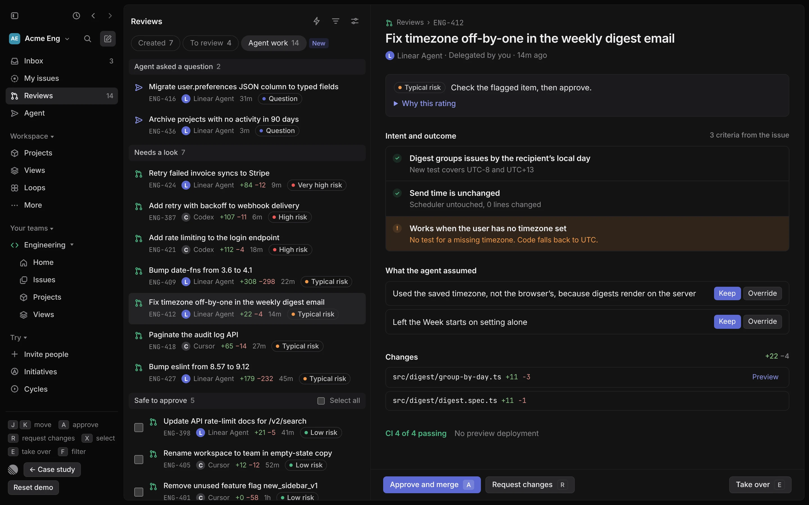

Problem and direction
Linear now has a place to review agent work. It still can’t show you whether the agent did what you asked.
Linear lets you hand an issue to an agent and keeps you accountable for the result, and Reviews now brings the pull request into Linear with a risk score and a Guide to what changed. Writing the code is no longer the slow part; deciding whether the agent did what the issue asked is.
What the product does today
- DelegationAssigning an issue to an agent triggers delegation. The agent acts, and the human teammate stays responsible for the outcome.
- AutomationLoops can run agent behaviors, coding sessions included, each time an issue arrives in Triage.
- OutputA coding session works in the cloud and returns a draft pull request, with progress shown in a session on the issue.
- ReportingViews filtered by Delegate and Insights by agent-session status describe agent work after it has happened.
- ReviewsPull requests appear in a Reviews view, split into Created and To review, and can be grouped by status, author, repository, size or priority. Each one opens to an overview, a diff and a merge button. A connected provider can add a Risk score (Low, Typical, High or Very high risk, with optional explanations), and a Guide walks through the pull request as a story.
- LinkingAn issue links to a pull request through the issue ID in the branch name or title, or a closing keyword. In my workspace, pull requests show no linked issue.
- InboxPriority inbox sorts notifications by source or by a filter you define.
Where it breaks
Reviews is built for pull requests, not delegation
A pull request an agent opens can sit under Created beside the code you wrote yourself, with nothing marking it as delegated work, or that it needs a different kind of read.
Risk is a label, not a way to work
Reviews can group by status and size and show a provider-supplied risk score, but nothing ranks a queue by what needs a human or batches the safe results.
Intent and outcome never meet
The overview shows the agent’s own summary and a list of files. The issue’s acceptance criteria are not on the page, and a pull request can show No issue at all. Guides explain what changed and why, not whether the issue’s acceptance criteria were met. Nothing shows which parts of the request the agent proved and which it guessed.
Every Loop multiplies the pile
Reviewing results one at a time turns the human into the bottleneck, or into a rubber stamp. Both waste the agent.
These four come from my own workspace, checked against Linear’s docs on Nov 10, 2026. The first three are visible today. Where pull requests from Linear’s cloud coding agent and from Loops land is still to confirm. This is one workspace and one user, so I would test it with five reviewers, measuring time to decision.
The path to a decision
Today
Proposed
Why it matters
The value of delegation is capped by how cheaply a person can say yes or no. Reviews made the decision closer, but not cheaper: the reviewer still rebuilds the link between request and result by hand. If review stays expensive, teams either stop delegating or start approving without reading. A faster agent makes this worse, because it produces results faster than anyone can judge them.
What a better experience should accomplish
Judgment goes where the evidence is
Show the request and the proof for it side by side, in one place.
Rank by risk, not recency
Start with what needs a human. Batch what does not.
Saying no costs the same as saying yes
Requesting changes or taking over is one key away, never a trip to another tool.
Trust is a dial
People set rules for what approves itself, preview what a rule would have done, and reverse it.
How I would know it worked
- SpeedTime from agent finished to human decision.
- CoverageShare of agent results reviewed within one working day.
- QualityRework rate: results that came back with requested changes.
- TrustShare approved by rule, and how often those are later reverted.
- CounterApprovals made without opening the evidence, and approvals later reverted.
Sources
The Reviews view, as it appears in my own Linear workspace in November 2026. Linear documentation:
- Agents in Linear
- Coding sessions
- Triage and Triage Intelligence
- Priority inbox changelog
- Diffs and reviews (Risk score and Guides)
- Linear cloud coding agent
- Loops
Explore and choose a direction
Three ways to make review cheap. One of them survives volume.
I sketched each direction against the same set of sample results, then scored them against what the problem demands. All three build on what Linear already ships. The winner borrows the best part of the other two.
A. Smarter inbox
Agent results become rich inbox rows with approve built in.
Strengths- No new surface to learn
- Fastest to build
- Chronological and mixed with mentions
- No room for evidence
- Batching is awkward
Folded in: inbox row links into Agent work
B. Evidence on the pull request
Each pull request opened in Reviews gets an evidence section on its overview, above the agent’s summary.
Strengths- Lands on a page people already use
- Natural home for the evidence
- Still one at a time, sorted by age
- You must already know which to open
Folded in: the evidence pane is this card
C. Agent work in Reviews
A third tab in Reviews, beside Created and To review, ranked by risk, with evidence beside the list and batch actions.
Strengths- Scales with Loops
- Evidence and decision in one pane
- Safe results batch, risky ones get attention
- A second way to rank the same pull requests
- Risk rating must earn trust
Chosen
Scoring against the problem
| Criterion | A. Smarter inbox | B. Evidence on the pull request | C. Agent work in Reviews |
|---|---|---|---|
| Speed to a decision | ●●●○ | ●●○○ | ●●●● |
| Holds up when Loops multiply results | ●○○○ | ●○○○ | ●●●● |
| Room for evidence | ●○○○ | ●●●● | ●●●● |
| Familiar to existing users | ●●●● | ●●●● | ●●●○ |
| Cheap to build | ●●●● | ●●●○ | ●●○○ |
My own judgment, meant to start a conversation. Because C extends Reviews instead of adding a surface, it costs little familiarity. It loses on build cost, and wins on the two criteria the problem is about.
What I cut
Auto-merge whatever passes CI
It removes the human from work the human is still accountable for. Passing tests prove the code runs. They do not prove it does what the issue asked.
A chat summary of each run
Prose is something a person has to re-verify. A row that pairs a claim with its proof can be scanned in a second.
A saved view on Created
The cheapest alternative, and it works today: a filter can sort and group agent pull requests. But it cannot join the issue’s acceptance criteria to the proof, so every result is still read one at a time, and nothing batches the safe ones. It gives up the evidence, which is the point of the concept.
Decision and risks
I chose C and kept the useful part of A and B. The inbox row links into Agent work, and a pull request opened anywhere in Reviews shows the same evidence card, so there is one component and three places it appears. Two risks remain: a second ranking of the same pull requests can confuse people about where to look, and a risk rating that people cannot explain will not be trusted. The prototype answers the second by showing the reasons behind every rating and a preview of what any rule would do.
Build the experience
Fourteen agent results. Clear the queue.
The Agent work tab in Reviews, as a working prototype with sample data. Risk, grouping, batching and rules are computed from the data, so the behavior is real. Created and To review show Reviews as it works today, plus two additions from this concept: a Delegated chip and a link from agent pull requests into Agent work.

Reasons beside every rating
Open Why this rating on any result. A score without reasons is a verdict. With reasons it is a starting point you can disagree with.
Criteria come from the issue
The checklist is the issue's own acceptance criteria, each with the agent's proof. A gap is highlighted instead of buried in a diff.
Overrides change the primary action
Override an assumption and Approve becomes Send overrides. The interface never lets you approve work you just disagreed with.
Create leverage
Agent work is one use of five parts the whole product can reuse.
Every agent feature in Linear asks the same question: can a person tell what happened and decide quickly? These parts answer it once.
For the product: components
Evidence row
One claim, its proof, its status. Used by Agent work, any pull request in Reviews, and Triage Intelligence suggestions.
- ✓Covered by a new testdigest.spec.ts line 42
- !Works with no timezone setNo evidence found
Risk pill with reasons
Reads the risk score Reviews already gets from a connected provider, adds whether every acceptance criterion has evidence, and is never shown without the why.
Assumption chip
Anything the agent decided on its own, with keep and override. Turns hidden choices into visible ones.
- Used the saved timezone
Agent attribution
Who did it, who delegated it, which Loop started it. The same line everywhere an agent appears.
LLinear Agent · from Loop: Triage bugs · 14m
Decision bar
One primary action, one way to steer, one way out. Learn it once, use it in every review.
Each part appears in three places: the Agent work tab, the pull request overview and the inbox row. A change to one improves all three.
How the rating is computed
Agent work reads the risk score Reviews already gets from a connected provider and adds one signal of its own: whether every acceptance criterion has evidence. The prototype stands in for both with the signals below.
| Signal | Points |
|---|---|
| CI is failing | 3 |
| Touches a sensitive path | 2 |
| Includes a major version bump | 1 |
| Any acceptance criterion without evidence | 1 |
| Total | Rating |
|---|---|
| 0 | Low risk |
| 1 to 2 | Typical risk |
| 3 to 4 | High risk |
| 5 or more | Very high risk |
The weights are illustrative. They would be tuned on revert and rework data.
For the team: principles for agent experiences
- Delegate, never abdicate. Accountability stays human, so the interface keeps the human informed.
- Show work, not chat. Evidence a person can scan beats prose they must re-check.
- Rank by risk, not recency. Attention is the scarce resource.
- Saying no costs the same as saying yes. Disagreement is a normal path, not an escape hatch.
- Trust is a dial. Automation is opt-in, previewed and reversible.
- Explain every score. A rating without reasons will be ignored.
These double as a review checklist for any new agent feature. Triage Intelligence and Loops are the first two to run it against.
For the way design gets done
Prototype as data
The prototype runs from one small data spec at the top of prototype.js. Designers and engineers edit the sample results and the queue, the risk ratings and the rules all recompute. A design review can change the argument by changing the data.
Built in hours, not sprints
Because the prototype is code, the conversation with engineering starts on behavior: which signals feed the rating, what a rule can see. That is where the real cost is hiding.
Rollout and open questions
- OpenWhich signals can Linear see reliably for a rating: paths touched, CI, dependency changes, criteria coverage?
- OpenHow do we prevent a falsely safe rating from becoming a habit of not reading?
- OpenWho owns the review when the person who delegated is out?
- OpenShould agent pull requests still appear under Created, or move to Agent work only?
- OpenWhere do pull requests started by Loops land in Reviews?
AI process
AI did the volume. I made the calls.
I used Claude for research, drafting and building. The framing, the cuts and the places where a human has to stay in the loop are my judgment.
Where Claude worked
- Read Linear's current docs on agents, coding sessions, Triage Intelligence and Priority inbox, so the problem rests on what the product does today.
- Sampled colors, type and layout from screenshots of my workspace, so the prototype matches Linear's interface.
- Pressure-tested my problem statement and proposed breakpoints for me to check against my own use.
- Drafted the three directions and sketched each against the same set of sample results.
- Built the clickable prototype from a small data spec, including risk scoring, batching and rules.
Where my judgment shaped it
- Choosing the product and the experience from my own daily use of agents.
- Deciding the problem is the cost of review, not the quality of the agent.
- Reframing once I saw Reviews in my own workspace: the gap is not a place to review, it is the evidence missing from that place.
- Cutting auto-merge and chat summaries, because accountability has to stay human.
- Keeping the primary action manual, with rules opt-in, previewed and reversible.
- Sequencing the rollout so evidence ships before automation.